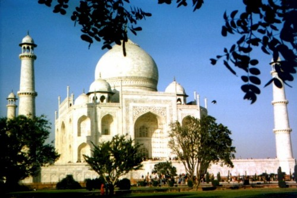

|
Hành Hương Xứ Phật Phạm Kim Khánh |
|
BuddhaSasana Home Page |
Vietnamese, with Unicode Times font |
|
|
Hành Hương Xứ Phật Phạm Kim Khánh |
|
-11- Taj Mahal Đền Taj Mahal nằm cách th ành Agra lối một dặm Anh. Đây là một kỳ quan trên thế giới, một hòn ngọc quý của Phương Đông và là một vinh diệu cho ngành kiến trúc Ấn Độ. Đền này được xây cất để tôn thờ Hoàng Hậu Mumtaz-uz-Zamani, băng hà vào năm 1630.Vua Shah Jahan, cưới Công Nương Mumtaz-uz-Zamani lúc bà lên mười chín, rất tâng tiu, quý trọng và khắng khít. Dầu trong những lúc chinh chiến cũng luôn luôn có mặt Bà bên cạnh. Vua Shah Jahan có mười bốn người con với Bà, tám trai và sáu gái. Bà nổi tiếng là người dịu hiền, có nhiều tâm thương người, thường đứng lên xin cứu mạng cho những tù nhân tử tội. Bà trút hơi thở cuối cùng sau khi sanh người con thứ mười bốn, con gái. Lúc ấy Bà 39 tuổi. Nhục thể Bà được chôn tạm hai năm trong khu viên cung điện Zenabad đẹp đẽ tại Burhanpur, bên kia dòng sông Tapti. Lúc bấy giờ vua đang đóng binh tại đây trong cuộc chiến chống quân Khani-Jahan Lodi. Công trình xây cất đền thờ Taj Mahal được biết phải mất hai mươi năm và xử dụng hai mươi ngàn nhân công. Những vật liệu như cẫm thạch trắng, cẩm thạch vàng, cẩm thạch đen, pha lê, vân thạch, kim cương và nhiều loại đá quý khác nhau được chở đến từ các nơi xa xôi như Trung Quốc, Tây Tạng, Tích Lan, các xứ Á Rạp v.v... quả thật là một công trình vĩ đại.  -ooOoo- Ðầu trang | 01 | 02 | 03 | 04 | 05 | 06 | 07 | 08 | 09 | 10 | 11 | 12 | Mục lục |
Chân thành cám ơn Bác Phạm
Kim Khánh đã gửi tặng bản vi tính
(Bình Anson, 09-2004)
[Trở
về trang Thư Mục]
last updated: 15-09-2004